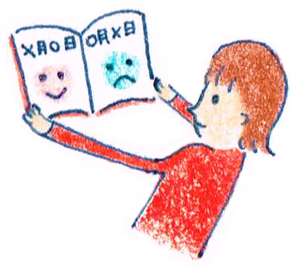

１２ : ゆがみ思考を修正しよう
・ゆがみ思考を修正しよう

前回までに、認知行動療法の基礎として、・認知と感情をわける
・現実的に考え直す
・自動思考のゆがみ
という3点について学んできました。
今回は認知行動療養の理解を深めるために「ゆがみ思考を修正する方法」について学んでいきます。
認知のゆがみを修正することは「ものの受け取り方」を変えて悪循環を解消しよう！というものです。
かといって、それは単純に
「早速、考え方を変えていきましょう！」
ということではありません。
何故なら人それぞれの考え方や気持ちを変えることが難しいことがあるからです。
・考え方を変えるのが難しいことも・・・
例えば人付き合いが苦手な人に「待ってるだけじゃだめ！もっと自ら積極的に話しかけてみたら？」と考え方を切り替えるようすすめても「それができるなら、最初から悩まないよ・・・。」と思う方もいるでしょう。
また人と接するのが苦痛な方に「もっとコミュニケーションを楽しもうよ！気持ち次第でコミュニケーションは変わるよ！」とアドバイスしてみても、本人は「楽しみたいとか思ってないし・・・。人と関わらないほうが楽だよ。」と思うかもしれません。
そして誰かに的確なアドバイスをしてもらっても「でも・・・」「だって・・・」と思わず返したくなることもあるでしょう。
このように私たちは慣れ親しんだ自分の認知をいきなり新しいものを変えることは難しいことがあるのです。
・1度日記を書いてじっくり向き合おう
そこで私がおすすめするのは“日記“です。日記は書いて、その後に見直すことでという心のクセを気付くことができます。
「そのときどのようなことを考えているか？」
と自分に問いかけてみてください。
日記の書き方として以下3点を書きます。
・今日の出来事をシンプルに書く。
・出来事に対して感じたこと、考えたことことを書く。
・３日後に見直して、感じたことや考え方が現実に沿っているかをチェックする。
このように、ある出来事に対して感情を書くことで心のクセが見えてきます。更に、時間が経ったあとに見直すと冷静に自分の考え方について客観視できます。
・日記のポイント
・ 1回だけで試してみましょう
日記と聞くと「三日坊主」で終わってしまうイメージもあるかと思います。決して「必ず毎日書かなくてはいけない。」と、窮屈にならなくても大丈夫です。まずは1回だけ試してみてください。
・誰かにアドバイスするつもりで書いてみよう！
３日後に見直すときは、自分の認知のしがらみもあり客観視が難しいときもあるかと思います。そんなときは自分にとって大切な人（友人、家族）が同じ状況だったら自分はどんなアドバイスをするかな？
ということを意識して書くと、書きやすいです♪
日記サンプル
○月○日
・今日の出来事
ここ最近、仕事で小さなミスが多い。いつもは温厚な上司も今日は 「もっと丁寧に仕事をやってもらえるかな？こんなに何度もミスをされると、困るよ。」 と注意を受けた。周囲の人も自分に対してよそよそしい態度を取るようになった。 もしかしたら裏で「あいつはダメな奴だ。」と言われているのかもしれない。
・そのとき考えたこと、感情
悲しい、情けない、自分はだめな人間だ。毎回、これからはミスをしないように気を付けようと思うのに、仕事がたくさん回ってくると、どこから手をつけていいかわからずパニックになってしまう。それに周りの人からどう思われてるかも気になってしまい、仕事に集中ができない。今の仕事に自分は向いてないのかもしれない。
・３日後の振り返り
仕事での失敗は誰にでもあるし、だめな人間だと決め付けることはない。仕事の量が多すぎて、それについていけずミスが増えてしまっている。
他人から「ダメな奴」だと思われるのが怖くて、何でも一人で完璧にこなそうとしているところがあると思う。しかし、それでは精神的にきついし、すべてを完璧に一人でこなすことは現実的な方法ではない。
もう少し周りの人に頼ってみること、相談することも必要だ。 それと自分自身も専門的な知識がまだ不十分なところもあるので、それを埋めるためにも会社帰りに専門書を買って勉強をしてみよう。
・認知行動療法まとめ
さて、認知のゆがみを修正する方法はいかがでしたか。認知功労療法は「難しい・・・。」と感じた方もいるかもしれませんね。
コミュニケーション社会の中で自信をなくし「これ以上、傷つきたくない」と人を避けたくなることもあります。 しかし、それがかえって自分を追い詰める行動になることもあります。
そのようなことを防ぐためにも自分の心のクセ、認知の歪みに気付きそれが現実に沿ったものなのか？と一度考えてみてくださいね♪
・講座では様々な心理学を学びます
ここまでは認知行動療法の基礎を学んできました。講座の中では実際に考え方を修正する練習を繰り返し行っていきます。
また認知行動療法のほかにも、
・交流分析の性格診断
・マインドフルネス療法
・ジョハリの窓
・フロー心理学
・チャレンジシートの作り方
・自分を苦しめる言葉遣いの直し方
等々様々な知識と練習を重ねていきます。 コミュニケーションで悩む生徒さんと一緒に相談しながら進めていきましょう♪
わいわい楽しいですよ（＾＾）
 |
|